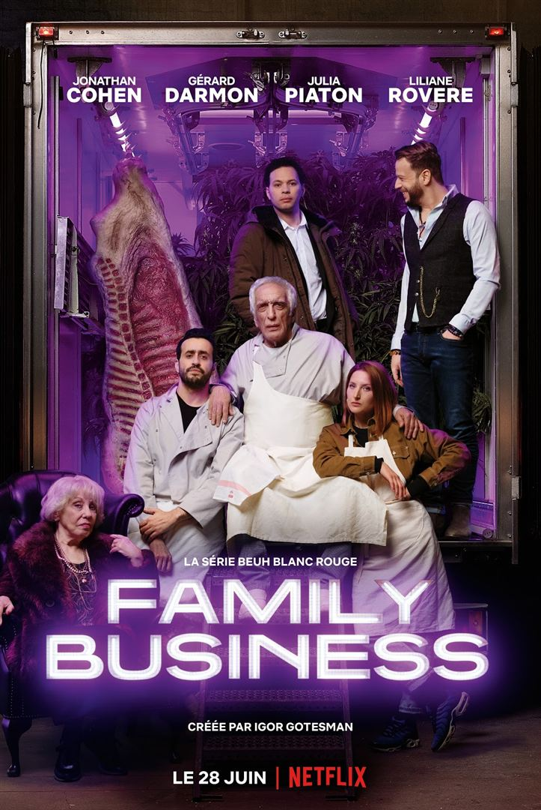

<section class="article-netflix py-5">
  <div class="container">
    <div class="row justify-content-center">
      <article class="col-sm-8">
        <h2>Family Business</h2>
        <h5>C’est l’histoire d’une beucherie…, 24 mars 2021</h5>
        <p>
          « Family Buiness » est une série comédie française, diffusée depuis 2019 sur Netflix et créée par Igor Gotesman. La série comporte actuellement 2 saisons de 6 épisodes.
          <br>

          <div class="article_img">
          
        </div>

        <br>

          <p>
            <strong class="emphase">De quoi ça parle :</strong> : Joseph, trentenaire, entrepreneur raté, rêve de business fleurissant. Quand il apprend, de sources sûres, que le cannabis va être légalisé en France, sa voie est toute trouvée : il transformera la boucherie casher de son père et ouvrira le premier coffee-shop français. Les amis et la familles seront évidemment de la partie.
          </p>
          <br>
          <p>
            <strong class="emphase">Mon avis :</strong> J’ai été agréablement surprise par cette série française.
Les personnages sont hauts en couleur, tantôt touchants tantôt hilarants. Les rebondissements s’enchainent sans laisser un seul temps mort, les dialogues loufoques sont efficaces. Le duo Darmon / Cohen fonctionne à merveille et donne envie de faire partie de cette famille déjantée. Seules, quelques scènes donnant une certaine lourdeur de l’humour auraient pu être évitées.
Mais au-delà de ses situations burlesques, Family Business aborde également les thématiques des liens familiaux, de l’amitié, de l’amour tout en gardant son second degré.

          </p>

          <br>
          <p>
            <strong class="emphase">Anecdote :</strong> A: Igor Gotesman s’est inspiré de sa propre vie et notamment de l’époque où il tenait un bagel-shop avec son père, pour créer la série.
Gérard Darmon est plutôt fier d’avoir participé à une série Netflix : « C’est de la pure vanité. C’est comme dire que je joue au foot au PSG avec Neymar ».

          </p>

        <br>

        <iframe width="560" height="315" src="https://www.youtube.com/embed/-zQbtUVjed4" title="YouTube video player" frameborder="0" allow="accelerometer; autoplay; clipboard-write; encrypted-media; gyroscope; picture-in-picture" allowfullscreen></iframe>

        <br>

        <p class="signature text-end"><strong>Angèle</strong></p>
      </article>
    </div>
  </div>
</section>
